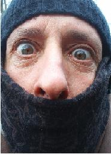
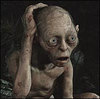
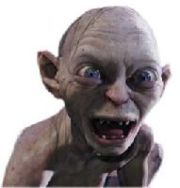

GTA Vice City
 De: La Frikipedia, la enciclopedia extremadamente seria.
De: La Frikipedia, la enciclopedia extremadamente seria.
De la serie Videojuegos:
GTA Vice City

Aquí se encuentra toda la banda
| Desarrollado por:
|
La Estrella de la Roca del Norte
|
| Distribuido por:
|
el que dstribuye
|
| Diseñado por:
|
Kesimoto Yamamemimoto
|
| Motor
|
diesel
|
| Género(s)
|
simulador de ser Dios
|
| Fecha de lanzamiento:
|
el récord es de 36 m
|
| Modos de juego:
|
estandar, simple, super simple, y friki
|
| Requisitos:
|
Procesador de lo que te de la gana. Ram indiferente. Tarjeta gráfica: de las malas porque el juego tiene 11 añitos.
|
| Disponible en:
|
el GTA 1
|
| Formatos:
|
cinta de video regrabable de 30 Mb
|
| Edades:
|
todos los públicos. Juego didáctico.
|
| Puntuaciones:
|
un 8.5, pa ser buenos.
|
Al Pacino te busca!
Los personajes del juego.
GTA Vice City es la quinta entrega de la saga de videojuegos Grandes Tarados Asesinos Grand Theft Auto o GTA.
Juego inspirado en los 80 que cuenta la vida de un mafioso de camisa hawaiana que debe hacer misiones como la de matar a un tío con una motosierra o la de liquidar a unos haitianos.
Está completamente plagiado inspirado en la película Scarface, si ya te habías dado cuenta no esque seas pro, que estaba bien fácil, oye.
Historia
El protagonista es Tommy Vercetti, un proxeneta, asesino, mafioso, malo-malísimo o como quieran llamarlo que se dedica a todo menos a intentar la pacificación mundial.
Llegó a Vice City, que según los autores del juego es algo parecido a Miami, tras chuparse media vida en la trena por no sé cuantos crímenes entre los cuales destaca el de abusar del Ketchup al ponerlo en un perrito caliente que cometió hace 20 añitos y por el cual fue detenido en el acto, tras la denuncia del vendedor.
El objetivo del juego es hacer su trabajo sucio, pequeño friki, cumpliendo con éxito todas las misiones que te den para convertirle en el Lord de Vice City.
Diferentes tipos de jugadores
Claro caso de un friki perdío que no contento con pasarse toda la Saga GTA, está inventando en el laboratorio su propio videojuego.
 El típico jugador que pertenece a la categoría de "los que no se aguantan más" y que no contento con el juego, quiere hacerse el Tommy en la vida misma. Alé, venga, tira a atracar una joyería, figura.
Aplicable para cualquier GTA:
Los legales
Son los que se pasan el juego sin hacer un puto truco, se hacen las misiones una tras otra, sin parar a comprobar lo didáctico que puede resultar un paseo por las calles de la ciudad.
Hacen las misiones como si la vida les fuese en ello y se las pasan el mismo día en que compran el juego.
(Es extremadamente probable que, con hambre de misiones se hayan comprado el GTA Vice City Stories, situado en la misma ciudad, sólo que con más misiones diferentes).
Los frikis perdíos
Se han pasado el 100% del juego (que no se limita a las misiones sólo, ni mucho menos) en todas las plataformas en las que lo hayan sacado, incluso si éstas no existen.
Los que necesitan ayuda
Son los típicos que empiezan con las misiones y que se quedan en la primera o la segunda, porque han jugado a la Play muy poco en su vida y/o tienen los dedos como morcillas y no pueden pulsar bien las teclas.
Los que necesitan ayuda, pero de verdad…
Aquellos que se han pasao todos los juegos de la saga GTA varias veces y que esperan con ansiedad la salida del GTA V.
Cabe destacar que se conocen el juego mejor que sus programadores y que son capaces de encontrar cualquier misterio, EasterEgg, error, curiosidad, etc
Es muy probable que una persona que entra en este perfil se haya creado una cuenta en Youtube exclusivamente dedicada a poner sus vídeos del juego, ya sean misiones, para los nenes que no se las saben pasar o vídeos de acrobacias con motos, cazas, tanques,etc.
Los que no se aguantan
Son esos que se han pasao ninguna o muy pocas misiones del juego por desinterés y que llevan más de cinco años jugando a hacer gilipolleces, fingir ser un francotirador desde una azotea, o jugar a ser Dios mientras van por la calle decidiendo quien muere hoy y quien no en el filo de su katana o motosierra o de un balazo en la cabeza.
Los tramposillos
Son esos que sólo saben jugar con trucos y que se saben una lista entera. No se limitan a aprenderse de memoria los “imprescindibles”, por así decirlo, si no que también se saben el de cómo Tommy puede fumar, o el de desbloquear cierto coche o el de poner el cielo nuboso.
Suele haber una raza intermedia de jugadores entre éstos y “los que no se aguantan”.
Los: “¡Qué pena que mi vida no sea así!”
Los que exprimen el juego al máximo y están todo el día huyendo de la poli en persecuciones ciertamente impresionantes o que, simplemente, se dedican todo el santo día a recoger putas señoritas, y llevárselas a la playa a follar tomar el sol.
Es muy frecuente ver a estos individuos subidos a los tejados más altos para realizar masacres y ser invencibles.
Los espias (Caso poco probable)
Los que estan haciendose los 007, Hitman, Bourne, etc. y se hacen que son super espias, que son los mejores que nunca nadie los agarra
Los delicuentes/policías para siempre
Los que se hacen delincuentes y hacen que no los atrapan ni aunque tengan 900000 estrellas (cuando viene Chuck Norris, y saben que es imposible ganarle). Y los que se hacen policias chocando a todos con su auto de poli, bajandolos del auto y cagandolos a tiros... que se creen... llegan a agarrar a Chuck... ya saben el resto...
Cosas inexplicables
- ¿Por qué si disparas a alguien en la cabeza esta desaparece? ¿Acaso hay un Ratoncito Pérez que se lleva las cabezas de la gente cuando a ésta la disparas? ¿Qué hace con las cabezas? ¿Las vende en el mercado negro?
- ¿Cómo puede Tommy, el protagonista, llevar bajo la camisa todo tipo de armas y muchísimas a la vez? (un lanzacohetes de metro y medio, una metralleta de 200 Kg, Kócteles Molotov que no le queman, multitud de metralletas, rifles, escopetas, etc.) ¿Tiene un bolsillo mágico como Doraemon? ¿No se da cuenta la policía que Tommy tiene una curiosa silueta? ¿No saben cachear en Vice City? Y ahora que lo pienso, ¿Cómo puede Tommy correr con tanto arma? Y para conducir, ¿Necesita reclinar el asiento por temor a que salte el airbag y se le clave el material que lleva?
- Ahí va otra: ¿Cómo puede ser posible que habiendo sido detenido, tras matar a miles de personas a sangre fría por la calle, (menguando muy considerablemente a la población de la ciudad y acabando con la casi-totalidad del cuerpo de policías), Tommy salga de la comisaria instantáneamente, sin haber tenido un juicio dónde haya sido sentenciado a muerte o enviado a Guantánamo?
- ¿No siente Tommy miedo al salir de la calle pudiendo llevar cantidades de dinero que superan los millones de dólares? (por mucha pistola que lleve). Al no existir bancos en Vice City (de hecho sí hay uno pero fue asaltado por lo que Tommy no confía en él... de hecho fue él mismo quien lo asaltó), ¿Cómo hace para llevar toda esa cantidad de pasta en la cartera? ¿Es acaso ésta, una puerta a otra dimensión donde Tommy tiene espacio ilimitado para guardar su dinero? ¿Acaso posee billetes exclusivos para él de cantidades exorvitantes, como el del trillón de dólares del Sr.Burns? Y si tuviese que comprar algo pa comer, ¿Con qué pagaría? ¿Tienen acaso en los Telepizzas/Bares/Antros cutres de Vice City cambio para un billete de 8 millones de pehetas o ya existian las tarjetas de credito?
- Si tú vas con una moto que no alcanza ni los 20km/h y te chocas contra una farola, lo más probable es que te la cargues, arrancándola del suelo y doblándola por varias partes como si estuviese hecha de regaliz, esto provoca en muchas personas a lo largo de su vida una seria pregunta: ¿Con qué pegan las farolas en Vice City? ¿Con mierda? ¿Cómo es posible que ni un tanque o un misilazo no puedan sin embargo con un poste de la luz presumiblemente de madera? ¿Quién demonios es el consejero de obras públicas de la ciudad?
- Si Tommy se cae de un edificio o de un helicoptero por muy alto que esté, al tio solo le baja la vida un poco; pero joder, el tio no sabe nadar...
- Puedes matar a una persona en el juego y seguir disparandole viendo como salpica la sangre por todos lados. Pero aun asi, llega la ambulancia, le da unos toques y se levanta como si nada ¡Y LO PUEDES REMATAR Y LO SEGUIRÁ HACIENDO!
- Si cojes el rifle de francotirador y le disparas a la luna... ¡la luna cambia de tamaño!
- Antes del juego, Tommy Vercetti estuvo en la carcel por matar a 15 personas. ¡Y yo he matado a mas de 10000 personas y deberian haberme condenado a cadena perpetua pero no he cumplido ni 1 dia de pricion!
- No hay niños.
Cosas que se pueden hacer en este juego
 Gollum cuando se enteró que en el Vice City no aparecía él.
 Cuando se enteró que en el juego podías follarte putas.

Cuando se dió cuenta de que este juego estaba hecho para él (era
"sólo suyoooo")
- Matar cubanos.
- Matar haitianos.
- Matar policias.
- Matar bomberos.
- Matar médicos.
- Matar putas.
- Matar militares.
- Matar seguratas.
- Matar objetos (si, así es amigos).
- Matar a too los conductores.
- Matar vendedores.
- Matar drogadictos.
- Matar ancianas.
- Matar gente que va de compras.
- Matar gente en patines.
- Matar repartidores.
- Matar a SWATs.
- Matar a los del FBI.
- Matar a los típicos chulitos de turno.
- Matar millonarios.
- Matar obreros mientras trabajan.
- Matar moteros.
- Matar taxistas.
- Matar gaviotas ¿o que son esas aves?
- Matar a los muertos.
- Rematar.
- Destruir todo tipo de vehículos.
- Alimentar peces.
- Y luego matarlos, ya que estan más gordos.
- Atracar establecimientos.
- Hacer el moñas.
- Ahogarse (no hay otra si caes al agua).
- Hacer armageddon mas de 10000 veces seguidas
Tipos de armas del juego
Explosivos y arrojadizas
- Granadas: Similares a unos Ferrero Roché, son perfectas para hundir barquitos.
- Cócteles Molotov: ¡Qué satisfacción y agrado produce ver a un tío quemándose que corre de un lado a otro como un poseso y que muere carbonizado en la acera!
- Gas lacrimógeno: Muy poco utilizado en el juego, es ideal para matar gorrinos en las fiestas del pueblo.
- Granadas por control remoto: Perfectas para simular ser uno de la ETA y hacer explotar coches o masas de personas mientras te decides en que momento apretar el botón del control remoto.
Fusiles de asalto
- Ruger: Perfecto para cargarte haitianos y/o cubanos cuando estos te toquen los “guevos”. Dispara una ráfaga de balas similar a una Minigun o metralleta pesada, pero con más precisión (¡Y además te cabe en el bolsillo!).
- Colt M4: De aspecto similar a un Kalashnikov, es perfecta para destruir vehículos y para rascarte el culo.
Rifles
- Rifle de francotirador: Este arma está pensada para frikis que se creen Dios sabe que cosa y se entretienen en una azotea volando cabezas.
- Psg-1: Idem. Lo único que esta es más profesional porque tiene más alcance. ¡Equipado además con una lucecita roja para apuntar y acojonar al personal como en las peliculas!
Pistola y Revólver
- Pistola Colt 45: ¡Bah! Esta no te sirve ni para espantar moscas.
- Revolver Colt Python 357: Con esto puedes matar hasta al Chuck Norris ese (no demostrado e imposible para matar a un chuck norris se necesita otro chuck norris).
Escopetas
- Remington cromada: Ideal para objetivos a corta distancia. La persona a la que disparas sale despedida unos veinte metros tras el disparo.
- Recortada: (
Para recortar) Es “agua cochina de la ría” porque tiene una precisión a larga distancia que da penita.
- Spas 12: Es como la remingtgtgon pero dispara 7 veces sin ser recargada. Ideal para polis.
Subfusiles
- Tec 9: Hace mucho ruido y poca sangre…enfin.
- Ingram Mac 10: Ideal para cualquier misión pues es muy eficaz abriendo nueces.
- Uzi 9mm: Esta es una de las mejores. Sirve para casi todo. Desde mondadientes hasta para deshinchar tripas de civiles.
- H&K MP5: Normalita. Te puede servir cómo último recurso si se te acaban las balas de otro arma.
Armas pesadas
- Lanzallamas: Muajajajaja. ¡Qué maligno eres mini-meeee! Es lo mejor para hacer una barbacoa humana; mucho mejor que un Molotov.
- M60: Para usar contra militares es de lo mejor. Pruébala en la base en Fort Baxer Air Base, junto al aeropuerto de Manolo Escobar.
- Minigun: ¡Dios! Es la única ametralladora verdaderamente útil para derribar helicópteros. Necesitarás por lo menos 500 balas para cada uno de ellos, pero merece la pena. Un clic en el ratón de 0,000001 segundos es suficiente para que salga la cantidad justa de balas para matar a un militar con chaleco y todo…
- Lanzacohetes: esta arma es capas de
violar Matar ha todos lo helicópteros y Barcos del mundo entero impresionante no.
De contacto
- Motosierra: Lo mejor de todo es que te salta sangre a la pantalla cuando matas a alguien con ella.
- Hacha: Bueno, si te quedas tirado sin balas…
- Destornillador: Buah... Para matar peces y militares no está mal.
- Palo de Golf: Contundente. 5 o 6 golpes son suficientes.
- Martillo: Lo usarás en alguna que otra misión del principio, pero es una auténtica bazofia.
- Katana: Muy buena para rebanar cabezas y matar entre 1 y 3 golpes.
- Porra: Resulta un poco irreal el poder que le han dado a este arma, no está mal. Matas a un poli y la consigues.
- Bate de Baseball: Para jugar... a ser Dios.
- Machete: Pobre. Utilízalo para cortar patatas.
- Puños: Puedes pelearte sin ningún arma dando puñetazos y patadas cuando te quedas en pañales.
- Puño americano: Un poco más sofisticado que el puño normal y corriente pero es pura mierda.
- Consolador: Aunque sea de plastico y no puedas hacer el uso para el que se creó, usandolo bien puedes hasta llegar a matar a una persona.
Artículos relacionados
Véase también
|
|
 Shooter Shooter
 Terror Terror
 Velocidad Velocidad
 Rol Rol
 Estrategia Estrategia
 Aventuras Aventuras
 Fight! Fight!
 Clásicos Clásicos
 Deportivos Deportivos
 Aventura gráfica Aventura gráfica
 Novela visual Novela visual
 Personajes de videojuegos Personajes de videojuegos
|
Autor(es):
- Fordus
- MURO DE AGUAS
- Azulejos
- El Sevillano
- Erazor
- J u ERgEN
- Sub Zro
- Kmillos
- Pakirri
- Carloswaldo
Frikipedia 2005-2016, Licencia
GFDL 1.2 - Extraído por FrikiLeaks